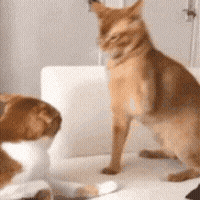
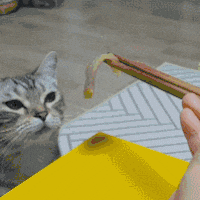

게임의 양과 질을 중요시하는 게이머
댓글
아이 이런 씨발
근데 나만볼수없다
아이 시발
쉽새끼
아침부터 이딴걸 봐야하다니
낑낑
양겜인데....;;
양양 죽겠지
그래그래 다같이 보자꾸나
시발 뭐 이딴겜은 도대체 어디서 구해와서 하는거여 ㅋㅋㅋㅋㅋㅋㅋㅋㅋㅋㅋㅋㅋㅋ
님아
생긴건 왜 좆같음
씨발년아 양과 질이 아니고 양의 질이잖아
존재는 처음에는 질인데 이때 이 질은 그 규정에 있어서 즉자적으로 규정된 존재 또는 존재적인 규정성을 뜻하며 이는 존재가 타자의 부정이라는 뜻에서 그러하다. 이와는 달리 양은 그 규정에 있어서 무관심적인 규정성으로서, 이는 어떤 타자의 부정을 뜻하는 것이 아니라 그 타자에 대해 무관심적인 것이며, 이때 그 무관심적인 규정성에 대하여 타자는 외면적이다. 그리하여 일단 이 양자에게서, 즉 이들의 직접성 속에서 밝혀진 사실은 질이 양으로, 그러나 또 이와 반대쪽으로의 이행도 이루어진다는 것이다.
대논리학 // 헤겔
여기서는 자연과학에서와 같이, 단순한 양적 변화가 일정한 시점에서 질적 차이로 전환한다는 헤겔이 자신의『 논리학』에서 발견한 법칙의 올바름이 입증 된다.
자본론 中 9장, 잉여가치율과 잉여가치량 // 칼 마르크스


울 울 울 메리노오옥..


어흐 씨발 샷따 내려!!

맞췄다